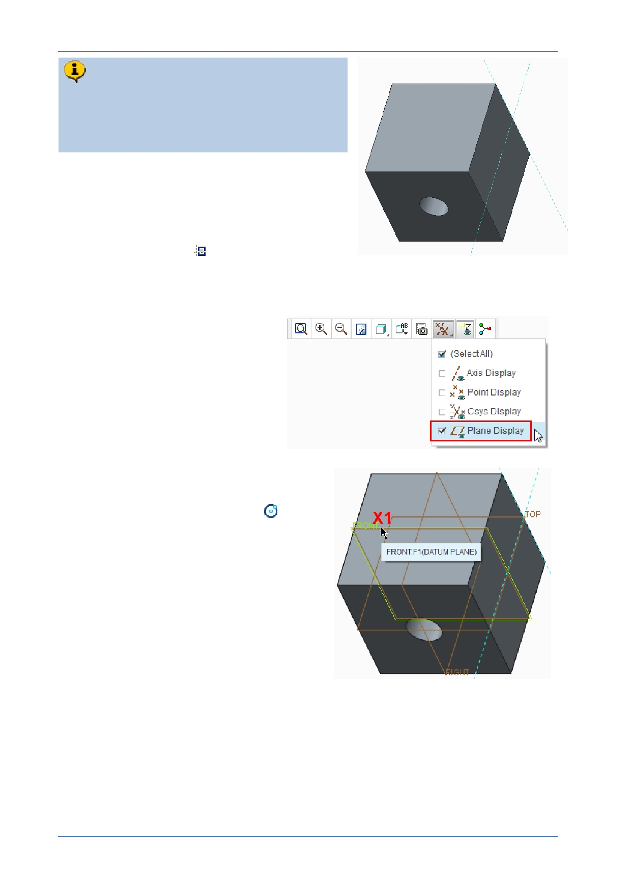

PTC Academic Program
Look carefully and you will see two light
blue “Reference lines”. One passes
through the center of the sketch plane but
the other along the back edge.
To easily locate the center of the circle at the
center of the cube, you will create another
reference using datum plane FRONT.
You could create this reference before sketching
by clicking References
from the Setup group of
the Sketch tab. It can also be created on-the-fly
while sketching.
4. Enable the display of datum
planes.
5. Creating a ref erence “on -the- fly”, while
sketching a circle:
Click Center and Point circle
from
the Sketching group of the Sketch tab.
Press and hold the ALT key and move
the cursor over datum plane FRONT
(X1). When the datum plane pre-
highlights in green, click to select it as
a sketcher reference.
Release the ALT key and a new light
blue reference line is created
coincident with the FRONT datum
plane.
© 2012 PTC
Creo Parametric 2.0 Primer
Page 30